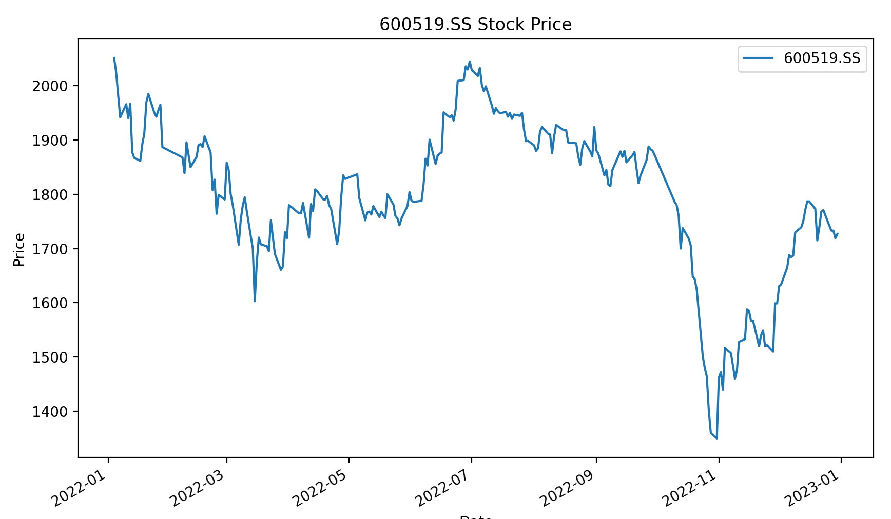

Python で金融データを取得する
この章では、移動平均戦略を使用し、Yahoo Finance のデータを使って実装する、Python クオンツの簡単な応用例を最初に見ていきます。
この戦略の基本思想は、短期と長期の移動平均線を比較して買いシグナルと売りシグナルを生成することです。
この簡単な例を行う前に、3つのパッケージをインストールする必要があります：
pip install pandas numpy matplotlib yfinance
パッケージの説明：
- pandasは、データ分析と操作を効率的に行うために設計された、強力なオープンソースのデータ処理および分析ライブラリです。
- numpyは、数学計算のために配列と行列のサポートを提供します。
- yfinanceは、Yahoo Finance から株式、指数、その他の金融市場データを取得することをサポートする、金融データ取得用のライブラリです。
- matplotlibは、静的、動的、インタラクティブなデータ可視化チャートを作成するための2次元プロットライブラリです。
履歴株式データの取得
yfinance を使用して履歴株式データを取得します。以下は簡単な例です：
例
# 株式データを取得
symbol = "600519.SS"
start_date = "2022-01-01"
end_date = "2023-01-01"
data = yf.download(symbol, start=start_date, end=end_date)
print(data.head())
出力結果は次のようになります：
Open High Low Close Adj Close Volume
Date
2022-01-04 2055.00000 2068.949951 2014.000000 2051.229980 1973.508057 3384262
2022-01-05 2045.00000 2065.000000 2018.000000 2024.000000 1947.309937 2839551
2022-01-06 2022.01001 2036.000000 1938.510010 1982.219971 1907.112915 5179475
2022-01-07 1975.00000 1988.880005 1939.319946 1942.000000 1868.416870 2981669
2022-01-10 1928.01001 1977.000000 1917.550049 1966.000000 1891.507446 2962670
簡単なデータ分析と可視化
pandas を使用したデータ分析と matplotlib を使用した可視化：
例
import pandas as pd
import matplotlib.pyplot as plt
# 株式データを取得
symbol = "600519.SS"
start_date = "2022-01-01"
end_date = "2023-01-01"
data = yf.download(symbol, start=start_date, end=end_date)
# 簡単なデータ分析
print(data.describe())
# 株価チャートを描画
data['Close'].plot(figsize=(10, 6), label=symbol)
plt.title(f"{symbol} Stock Price")
plt.xlabel("Date")
plt.ylabel("Price")
plt.legend()
plt.show()
チャートは次のように表示されます：

移動平均交差戦略
次に、Yahoo Finance ライブラリ (yfinance) を使用して貴州茅台（600519.SS）の株式データを取得し、移動平均戦略に基づいて簡単なデモを行います：
例
import yfinance as yf
import matplotlib.pyplot as plt
# 貴州茅台の株式データを取得
symbol = "600519.SS"
start_date = "2022-05-01"
end_date = "2023-12-01"
data = yf.download(symbol, start=start_date, end=end_date)
# 短期（50日）と長期（200日）の移動平均を計算
data['MA_50'] = data['Close'].rolling(window=50).mean()
data['MA_200'] = data['Close'].rolling(window=200).mean()
# 売買シグナルを生成
data['Signal'] = 0
data['Signal'][data['MA_50'] > data['MA_200']] = 1 # 短期移動平均線が長期移動平均線を上抜けると、買いシグナルが発生
data['Signal'][data['MA_50'] < data['MA_200']] = -1 # 短期移動平均線が長期移動平均線を下抜けると、売りシグナルが発生
# 株価と移動平均線を描画
plt.figure(figsize=(10, 6))
plt.plot(data['Close'], label='Close Price')
plt.plot(data['MA_50'], label='50-day Moving Average')
plt.plot(data['MA_200'], label='200-day Moving Average')
# 売買シグナルをマーク
plt.scatter(data[data['Signal'] == 1].index, data[data['Signal'] == 1]['MA_50'], marker='^', color='g', label='Buy Signal')
plt.scatter(data[data['Signal'] == -1].index, data[data['Signal'] == -1]['MA_50'], marker='v', color='r', label='Sell Signal')
plt.title("Maotai Stock Price with Moving Averages")
plt.xlabel("Date")
plt.ylabel("Price (CNY)")
plt.legend()
plt.show()
上記のサンプルコードでは、貴州茅台（600519.SS）の株式データを使用し、50日と200日の移動平均線を計算し、両者の関係を比較することで売買シグナルを生成しています。
最後に、Matplotlib を使用して株価チャートを描画し、売買シグナルをマークしました。
実際の取引では、戦略を慎重に研究・テストすることを忘れないでください。上記に基づいて直接実際の投資を行わないでください。
上記のコードを実行すると、以下のチャートが出力されます。緑色の部分は買いシグナル、赤色の部分は売りシグナルです。画像をクリックすると拡大表示されます：

バックテスト戦略
株式の日次リターンの正負を使用して取引シグナルを生成し、簡単な例を示しました。この条件は自分の戦略に合わせて変更できます。
例
import pandas as pd
import matplotlib.pyplot as plt
# 株式データを取得
symbol = "600519.SS"
start_date = "2023-01-01"
end_date = "2023-12-01"
data = yf.download(symbol, start=start_date, end=end_date)
# クロスシグナル列を初期化
data['Signal'] = 0
# 日次リターンを計算
data['Daily_Return'] = data['Close'].pct_change()
# 戦略シグナルを計算
data['Signal'] = 0
data.loc[data['Daily_Return'] > 0, 'Signal'] = 1 # 上昇率をシグナルとして使用。必要に応じて条件を変更可能
# 戦略リターンを計算
data['Strategy_Return'] = data['Signal'].shift(1) * data['Daily_Return']
# 累積リターンを計算
data['Cumulative_Return'] = (1 + data['Strategy_Return']).cumprod()
# 累積リターン曲線を描画
plt.figure(figsize=(10, 6))
plt.plot(data['Cumulative_Return'], label='Strategy Cumulative Return', color='b')
plt.plot(data['Close'] / data['Close'].iloc[0], label='Stock Cumulative Return', color='g')
plt.title("Cumulative Return of Strategy vs. Stock")
plt.xlabel("Date")
plt.ylabel("Cumulative Return")
plt.legend()
plt.show()
上記のコードを実行すると、以下のチャートが出力されます：

クオンツ取引の基本戦略
クオンツ取引は、数学モデル、統計学、コンピュータアルゴリズムに基づき、系統的な方法で取引機会を特定し実行します。
以下は、よくあるクオンツ取引の基本戦略です：
クオンツ取引は、数学モデル、統計学、コンピュータアルゴリズムに基づき、系統的な方法で取引機会を特定し実行します。
以下は、よくあるクオンツ取引の基本戦略です：
1. 移動平均戦略
戦略の考え方：株価の過去平均値に基づき、短期と長期の移動平均線の差分を計算して売買シグナルを生成します。
実装方法：短期と長期の移動平均を計算し、短期移動平均線が長期移動平均線を上抜けたときに買いシグナルが発生し、逆の場合は売りシグナルが発生します。
2. 平均回帰戦略
戦略の考え方：価格の過去の変動に基づき、価格は変動後に平均水準へ回帰すると考えます。
実装方法：価格と平均値の差分を計算し、価格が平均値から過度に乖離したときに買いまたは売りのシグナルを生成します。
3. モメンタム戦略
戦略の考え方：価格のトレンドに基づき、価格トレンドはしばらく続くと考える戦略です。
実装方法：価格の変化率やその他のトレンド指標を計算して、買いまたは売りのシグナルを生成します。
4. マーケットニュートラル戦略
戦略の考え方：買いと売りを同時に行うことで、市場の相対的な強弱を利用します。
実装方法：2つ以上の関連資産間の価格差または相関関係に基づいて、取引シグナルを生成します。
5. 統計的裁定戦略
戦略の考え方：統計学の原理に基づき、価格間の一時的な不均衡を探し、裁定取引を実現します。
実装方法：価格、ボラティリティ、その他の統計指標の異常値を見つけて、取引シグナルを生成します。
6. イベントドリブン戦略
戦略の考え方：特定のイベントや情報の発生に基づいて取引シグナルを生成します。
実装方法：ニュース、決算報告、経済指標などを監視し、特定のイベントが発生したときに取引を実行します。
7. 機械学習戦略
戦略の考え方：機械学習アルゴリズムを利用して大量のデータからパターンを学習し、将来の価格動向を予測します。
実装方法：回帰、分類、または深層学習モデルを使用し、モデルをトレーニングして市場の動向を予測します。
8. 高頻度取引戦略
戦略の考え方：極めて短時間の小さな価格差を利用するために、大量の取引を高速に実行します。
実装方法：高性能アルゴリズムと高速実行システムを使用し、通常は大量の取引と短い保有時間を伴います。
これらの戦略はクオンツ取引分野のほんの一部に過ぎません。実際、クオンツ取引戦略の形態は多種多様で、市場、資産クラス、トレーダーの好みに応じて調整できます。重要なのは、クオンツ戦略の設計には十分なバックテストとリスク管理の考慮が必要であり、さまざまな市場環境での有効性を確保することです。
その他の拡張
クリックしてノートを共有
ノートは本記事の内容の拡張である必要があります。
記事の投稿はこちらをクリック
登録招待コードの取得方法
ノート共有前にはログインが必要です！
登録招待コードの取得方法